Zur Charakterisierung eines radialsymmetrischen Laserstrahls, der in seiner Grundmode ein radiales Bestrahlungsstärkeprofil besitzt, das durch eine Gauß’sche Verteilung (Abbildung A2.1) beschrieben werden kann, werden folgende Größen unter Verwendung von Zylinderkoordinaten benötigt:
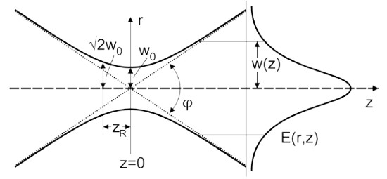
Abb. A2.1 Propagation eines Gauß‘schen Strahls
(1) Für den Gauß‘schen Strahl der Wellenlänge λ gilt der fundamentale Zusammenhang zwischen Strahldurchmesser in der Strahltaille d0 und Strahldivergenz im Fernfeld φ gemäß Gl. A2.1:
| d0⋅φ = 4⋅λ⁄π | Gl. A2.1 |
(2) Das heißt, das Strahlparameterprodukt (Produkt aus Strahltaillendurchmesser d0 und Strahldivergenz im Fernfeld (Fernfelddivergenzwinkel) φ) hängt nur von der Wellenlänge ab. Eine kleine Strahltaille ist mit einer großen Strahldivergenz verbunden und umgekehrt. Für den Strahldurchmesser d(z) entlang der Ausbreitungsrichtung gilt:
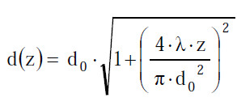 |
Gl. A2.2 |
(3) Der Übergang zwischen Nah- und Fernfeldbereich des Laserstrahls, d. h. zwischen Orten in der Nähe zur Strahltaille und in großem Abstand davon, wird durch die sogenannte Rayleigh-Länge zR beschrieben. Sie ist als derjenige Abstand von der Strahltaille definiert, bei der sich die Strahlquerschnittsfläche verdoppelt bzw. der Strahldurchmesser um den Faktor √2 vergrößert hat. Es gilt:
| zR = | d0 | = | π⋅d02 | Gl. A2.3 |
| φ | 4⋅λ |
(4) Für größere Abstände (z » zR) gilt d(z) = φ · z.
(1) Die radiale Leistungsdichteverteilung des Laserstrahls E(r,z) für den Abstand z von der Strahltaille wird durch die Funktion
| E(r,z) = E(0,z)⋅e-8⋅r2⁄d2(z) | Gl. A2.4 |
beschrieben. Dabei ist E(0,z) die Leistungsdichte (Bestrahlungsstärke) auf der optischen Achse, r die radiale Koordinate und d(z) der Strahldurchmesser an der Stelle z:
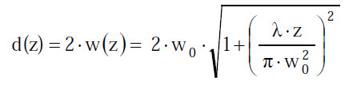 |
Gl. A2.5 |
(2) Der Wert der Leistungsdichte (Bestrahlungsstärke) am Ort r = d(z)/2 beträgt:
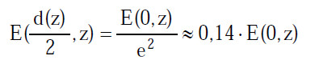 | Gl. A2.6 |
Die Leistungsdichte (Bestrahlungsstärke) ist also am Ort des Strahlradius im Vergleich zum Maximalwert auf den 1/e2-Teil abgefallen.
(3) In den sicherheitsrelevanten Normen und Vorschriften wird jedoch eine andere Definition des Strahldurchmessers bzw. des Strahlradius verwendet. Hier bezieht man den Strahldurchmesser d63 auf den Abfall der Leistungsdichte auf den 1/e-Teil des Maximums, sodass man anstatt Gl. A2.4, die Gleichung
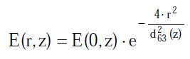 |
Gl. A2.7 |
zur Berechnung von E(r,z) heranziehen muss.
(4) Daraus folgen die Zusammenhänge zwischen den Strahldurchmessern in den Sicherheitsnormen und anderen Normen der Strahlungsphysik:
| d63(z) = | d(z) | Gl. A2.8 |
| √2 |
Dabei ist d63 der Strahldurchmesser, der 63 % der gesamten Strahlungsleistung umfasst. Da die Divergenz des Laserstrahls über den Strahldurchmesser definiert wird, gilt der Zusammenhang aus Gl. A2.8 auch hinsichtlich Angaben bzgl. der Strahldivergenz:
| φ63 = φ⁄√2 | Gl. A2.9 |
Die Strahldivergenz φ63 in sicherheitsrelevanten Normen ist also über diejenige radiale Strahlenbegrenzung im Fernfeld definiert, für die die Leistungsdichte (Bestrahlungsstärke) auf den 1/e-Teil (ca. 37 %) abgefallen ist, d. h. die Leistungsdichte hat um etwa 63 % abgenommen.
(1) Berechnungen bezüglich Expositionsgrenzwerten erfordern häufig die Angabe desjenigen Anteils der Gesamtleistung oder -energie, die in einem spezifizierten Abstand durch eine vorgegebene Blende fällt. Für einen Gauß‘schen Strahl kann dieser Anteil, der durch eine kreisförmige Blende des Durchmessers dB hindurch tritt, durch den Kopplungsparameter η ausgedrückt werden:
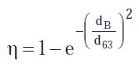 |
Gl. A2.10 |
Dabei ist d63 der Strahldurchmesser, in dem 63 % der Strahlungsleistung enthalten ist. Er wird auf die sogenannten 1/e-Punkte (1/e ∼ 37 %) bezogen, d. h. für ein Gauß’sches Strahlprofil wird der Strahldurchmesser d63 aus den beiden Punkten ermittelt, an denen die Bestrahlungsstärke das 1/e-fache ihres Maximalwertes beträgt.
(2) Der Strahlungsanteil, der durch die Blende hindurch tritt, ist dann
| PB = η⋅P | Gl. A2.11 |
oder
| QB = η⋅Q | Gl. A2.12 |
Hierbei sind P die Gesamtleistung und Q die Gesamtenergie.
(3) Es lässt sich derjenige Leistungsanteil berechnen, der durch eine vorgegebene Blende mit dem Durchmesser dB fällt:
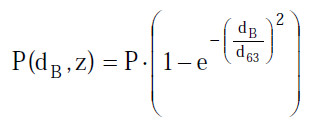 |
Gl. A2.13 |
Durch eine Blende mit dem Durchmesser dB = d/√2 fällt demnach ein Leistungsanteil von 63 % der Gesamtleistung des Laserstrahls.
(1) In Abbildung A2.2 wird der zeitliche Verlauf der Laserstrahlung für verschiedene Impulsformen dargestellt. Als Impulsbreite gibt man in der Regel die Halbwertsbreite tH an.
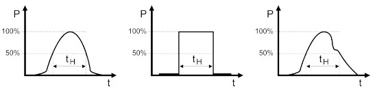
H für den Fall eines gaußförmigen, eines Rechteck- und eines unregelmäßigen Impulses" />Abb. A2.2 Impulsdauer tH für den Fall eines gaußförmigen, eines Rechteck- und eines unregelmäßigen Impulses
(2) Abbildung A2.3 zeigt den zeitlichen Verlauf der Leistung bei einer regelmäßigen Impulsfolge. Die Impulsfolgefrequenz fP wird durch die Zahl der Impulse pro Sekunde gegeben.
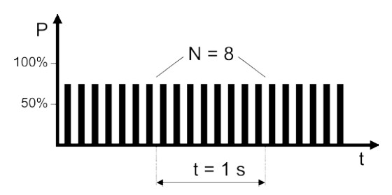
P = 8 Hz" />Abb. A2.3 Impulsfolgefrequenz für einen regelmäßig gepulsten Laser mit fP = 8 Hz
(1) Die durch einen Strahler bzw. eine diffuse Reflexion erzeugte Bildgröße auf der Netzhaut wird durch die Winkelausdehnung α der scheinbaren Quelle bestimmt (Abbildung A2.4). Für kleine Winkel gilt näherungsweise
| α = dQ⁄r, | Gl. A2.14 |
wobei dQ den Durchmesser der scheinbaren Quelle und r den Abstand zur scheinbaren Quelle darstellt.
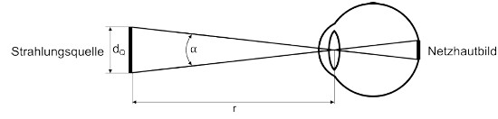
Abb. A2.4 Winkelausdehnung α der scheinbaren Quelle
(2) Jeder Blick in einen kollimierten Strahl oder auf eine Laserstrahlungsquelle, die eine Winkelausdehnung von weniger als αmin = 1,5 mrad besitzt, wird als "direkter Blick in den Strahl" oder "Blick auf eine Punktquelle" bezeichnet. Die beiden Begriffe sind für die Zwecke dieser Betrachtung gleichbedeutend.
(3) Der Übergang zwischen der "Punktquellenbetrachtung" und dem "Blick auf eine ausgedehnte Quelle" wird durch den Minimalwinkel αmin = 1,5 mrad festgelegt.
(4) Bei rechteckigen oder länglichen Quellen mit einer minimalen Ausdehnung dQ1 und einer maximalen Ausdehnung dQ2 gilt:
| dQ = | dq1 + dq2 | Gl. A2.15 | |
| 2 |
bzw.
| α = | α1 + α2 | Gl. A2.16 | |
| 2 |
Dabei muss beachtet werden, dass der kleinste auftretende Wert α1 auf den Wert αmin = 1,5 mrad gesetzt wird, wenn er kleiner als 1,5 mrad ist. Ebenso wird auch der größte auftretende Wert α2 auf den Wert von αmax = 100 mrad begrenzt, wenn er αmax überschreitet.
Der Grenz-Empfangswinkel γP kann nach Abbildungen A2.5 oder A2.6 festgelegt werden. In Abbildung A2.5 wird der Grenz-Empfangswinkel γP durch eine Blende vor der Strahlungsquelle begrenzt. Wird die Strahlungsquelle mit einer Linse auf die Detektorfläche abgebildet, kann der Empfangswinkel durch eine Blende vor dem Detektor begrenzt werden (Abbildung A2.6).
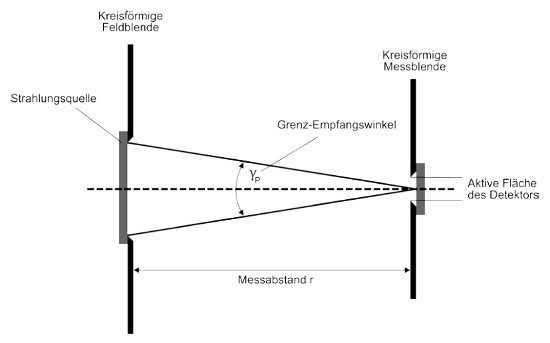
P durch eine Blende vor der Strahlungsquelle" />Abb. A2.5 Begrenzung des Empfangswinkels γP durch eine Blende vor der Strahlungsquelle
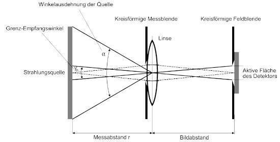
P durch eine Blende vor dem Detektor" />Abb. A2.6 Begrenzung des Empfangswinkels γP durch eine Blende vor dem Detektor
(1) Der Augensicherheitsabstand NOHD stellt die Entfernung von einer Laserstrahlungsquelle dar, bei der die Bestrahlungsstärke oder Bestrahlung unter die Expositionsgrenzwerte fällt.
(2) Bei den folgenden Berechnungen muss eine bestimmte Expositionsdauer angenommen werden. Es handelt sich z. B. um den NOHD-Wert bei 10 s oder NOHD-Wert bei 100 s. Bei den Angaben in Datenblättern und den Vergleichen muss diese Zeit berücksichtigt werden.
(3) Für üblicherweise kleine Werte der Strahldivergenz φ lässt sich die Bestrahlungsstärke E im Fernfeld für den Abstand r (siehe Abbildung A2.7) als
| E = | 4⋅P⋅e-μ⋅r | Gl. A2.17 |
| π⋅(d+r⋅φ)2 |
angeben. Dabei werden d und φ an den 1/e-Punkten des Strahlungsprofils gemessen, wobei für das Strahlungsprofil eine Gauß‘sche Verteilung angenommen wird und es sind:
r - Abstand vom Laserausgang (außerhalb der Rayleigh-Länge),
P - Laserleistung,
μ - Absorptionskoeffizient und
d - Strahldurchmesser am Laserausgang.
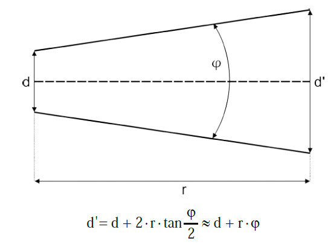
Abb. A2.7 Aufweitung eines Laserstrahls
(4) Der Exponentialfaktor in Gl. A2.17 stellt die durch die Schwächung in der Atmosphäre verursachten Verluste dar und kann vernachlässigt werden, wenn die Sichtweite deutlich größer als der Augensicherheitsabstand ist. Es ergibt sich dann:
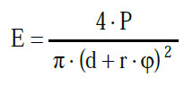 |
Gl. A2.18 |
(5) Wenn E durch den Expositionsgrenzwert EEGW ersetzt wird, wird r zum NOHD und die Gleichung kann entsprechend aufgelöst werden:
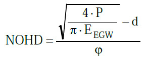 |
Gl. A2.19 |
(6) Da der Strahldurchmesser d am Laserausgang in der Regel sehr klein bezogen auf das Ergebnis des Wurzelausdrucks ist, kann er für eine einfache Abschätzung zur sicheren Seite hin entfallen.
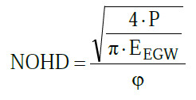 |
Gl. A2.20 |
(7) Diese Gleichung zeigt, dass bei 100-facher Leistung der NOHD um den Faktor 10 zunimmt, und bei Verringerung der Strahldivergenz um den Faktor 100, erhöht sich auch der NOHD um den Faktor 100.
(8) Wenn die Schwächung durch atmosphärische Absorption berücksichtigt werden soll, kann Gl. A2.17 nicht elementar nach r aufgelöst werden. Die folgende Gleichung gibt jedoch ein Ergebnis wieder, das auf der sicheren Seite liegt:
| NOHDμ = 0,5⋅NHOD⋅(1+e-μ⋅NOHD) | Gl. A2.21 |
Dabei ist NOHDμ der Sicherheitsabstand unter Berücksichtigung von Abschwächung durch die Atmosphäre und NOHD der Abstand in Meter, der sich durch Anwendung von Gl. A2.19 ergibt. Alternativ kann NOHDμ auch iterativ aus Gl. A2.17 ermittelt werden.
(9) Einen zuverlässigen Schätzwert für μ, den Schwächungskoeffizienten durch atmosphärische Absorption, kann man aus folgender Gleichung gewinnen:
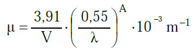 |
Gl. A2.22 |
Dabei ist
V – Sichtweite in km,
λ – Wellenlänge in μm (0,4 μm ≤ λ ≤ 2 μm) und
A = 0,585 · V0,33.
(1) Wenn beim Blick in Laserstrahlung im Wellenlängenbereich der Netzhautgefährdung optische Instrumente (Fernrohre, Ferngläser usw.) verwendet werden (Abbildung A2.8), ist es notwendig, den Augensicherheitsabstand NOHD zu vergrößern, um der Zunahme der auf das Auge einwirkenden Strahlung Rechnung zu tragen.
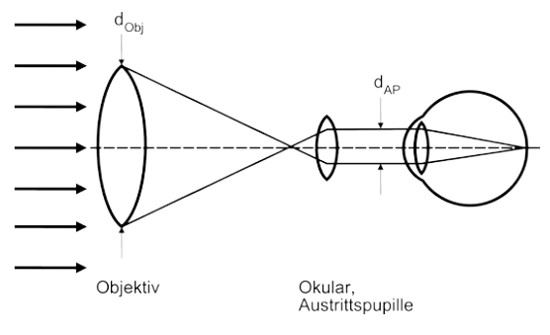
Abb. A2.8 Sammelnde Wirkung eines Fernrohrs
(2) Unter der Bedingung, dass der Durchmesser des Strahlenbündels größer als der Objektivdurchmesser dObj und der Durchmesser der Austrittspupille dAP größer als der Durchmesser der Messblende dM ist (dAP > dM), gilt näherungsweise:
| ENOHD = NOHD⋅M | Gl. A2.23 |
Dabei ist ENOHD erweiterter Augensicherheitsabstand und M die Vergrößerung des Instruments, die sich folgendermaßen berechnet:
| M = | dObj | Gl. A2.24 |
| dAP |
(3) Für den Fall, dass der Durchmesser der Austrittspupille dAP kleiner als der Durchmesser der Messblende dM ist (dAP < dM), gilt
| ENOHD = NOHD⋅G | Gl. A2.25 |
mit
| G = | dObj | Gl. A2.26 |
| dM |
Wenn daher G kleiner als M ist, wird im Fall von Gleichung A2.23 der ENOHD kleiner.
Hinweis:
Die Bestimmung des NOHD hängt von einer Reihe zusätzlicher Parameter ab:
Beispiel 1:
Ein Laser mit einem Gauß‘schen Strahlprofil hat eine Emissionsleistung von P = 4 W, eine Strahldivergenz von φ = 0,7 mrad und einen Durchmesser des austretenden Strahlenbündels von d = 1 mm. Berechne den Sicherheitsabstand NOHD, wenn der entsprechende Expositionsgrenzwert EEGW = 10 W ⋅ m-2 beträgt und eine vernachlässigbare atmosphärische Schwächung angenommen wird.
Lösung:
Die Anwendung von Gl. A2.19 ergibt:
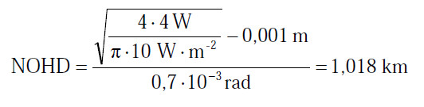 |
Gl. A2.27 |
Beispiel 2:
Dem Laser aus Beispiel 1 wird eine strahlaufweitende Optik vorgesetzt. Diese verringert die Strahldivergenz auf φ = 0,1 mrad und vergrößert den Durchmesser des Strahlenbündels am Austritt auf d = 7 mm. Berechne den neuen Sicherheitsabstand NOHD.
Lösung:
Der NOHD ist:
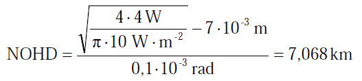 |
Gl. A2.28 |
Man beachte die Bedeutung der Strahldivergenz für die Größe des NOHD. Man beachte ferner, dass in diesem Beispiel der Durchmesser d des austretenden Strahlenbündels vernachlässigt werden kann.
Beispiel 3:
Der Laser aus Beispiel 1 wird mit einem Fernglas 8x30 beobachtet, es wird also mit einem Fernglas in die Austrittsöffnung des Lasers geblickt. Das Fernglas hat eine achtfache Vergrößerung und einen Objektivdurchmesser von 30 mm. Berechne den erweiterten Augensicherheitsabstand ENOHD.
Lösung:
Bei Anwendung der Gleichung A2.23 und des Vergrößerungsfaktors M ergibt sich:
| ENOHD = 1,018km ⋅ 8 = 8,144km | Gl. A2.29 |
Bei Anwendung des Vergrößerungsfaktors G ergibt sich für eine Laserwellenlänge von 1 064 nm mit
| ENOHD = 1,018km ⋅ | 30 mm | = 4,363km | Gl. A2.30 |
| 7 mm |
ein deutlich niedrigerer Wert. Dieser Wert darf verwendet werden, da der Durchmesser der Austrittspupille
| dAP = | 30 mm | = 3,75 mm | Gl. A2.31 |
| 8 |
kleiner als der der Messblende von dM = 7 mm ist.
Hinweis
Der eingesetzte NOHD aus Gl. A2.23 darf nur übernommen werden, wenn der darin eingesetzte Strahldurchmesser sehr klein (deutlich kleiner als die Messblende) oder 0 ist. Liegt eine Strahltaille außerhalb der Strahlaustrittsöffnung vor, so ist der Abstand bis zur Strahltaille dem ENOHD hinzuzurechnen.
(1) Die Abstrahlung von Lichtwellenleitern wird üblicherweise durch die sogenannte numerische Apertur NA charakterisiert. Diese bezeichnet den Sinus des halben Divergenzwinkels Φ5/2 der Abstrahlcharakteristik, gemessen bei den Punkten mit 5 % der Spitzenbestrahlungsstärke:
| NA = sin | φ5 | bzw. | φ5 | = arc sin NA | Gl. A2.32 |
| 2 | 2 |
(2) Für einen Strahl mit Gauß’scher Strahlcharakteristik enthält der Strahldurchmesser, der auf den 5 %-Wert der maximalen Bestrahlungsstärke bezogen ist, 95 % der gesamten Leistung oder Energie. Der Strahldurchmesser d95 im Abstand a von der Quelle wird berechnet zu
| d95 = dF + 2 ⋅ a ⋅ tan | φ5 | = dF + 2 ⋅ a ⋅ tan (arcsin NA) | Gl. A2.33 |
| 2 |
(3) Wenn der Durchmesser der emittierenden Faser dF in der Größenordnung kleiner als 150 μm ist, kann er in den meisten Fällen vernachlässigt werden. Außerdem wird für Sicherheitsberechnungen der Durchmesser mit 63 % der Gesamtleistung verwendet. Der Umrechnungsfaktor für den Gauß‘schen Strahl ist d95/d63 = 1,7. Daher ergibt sich der Strahldurchmesser näherungsweise zu:
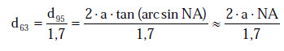 |
Gl. A2.34 |
(4) Die abstandsabhängige Leistungsdichte (Bestrahlungsstärke) für einen Einmoden-Lichtwellenleiter (SM-LWL, SM von "single-mode") beträgt:
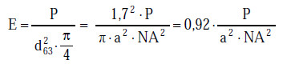 |
Gl. A2.35 |
(5) Ein Einmoden-Lichtwellenleiter ist ein spezieller Fall einer Punktlichtquelle. Die Strahldivergenz eines SM-LWL wird durch den Durchmesser des Modenfeldes ω0 und die Wellenlänge λ der Quelle bestimmt. Der Strahldurchmesser eines SM-LWL wird im Abstand a angenähert durch:
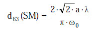 |
Gl. A2.36 |